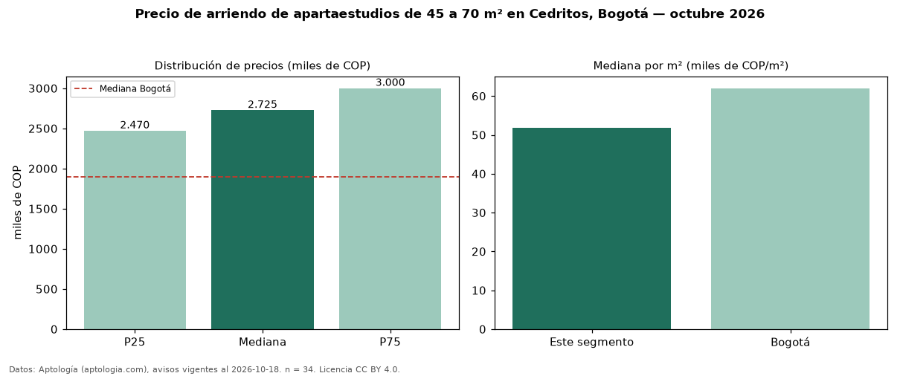

Precio de arriendo de apartaestudios de 45 a 70 m² en Cedritos, Bogotá — octubre 2026
COP 2,73 millones al mes es el canon mediano de apartaestudios de 45 a 70 m² en arriendo en Cedritos (localidad de Usaquén), Bogotá (n = 34 avisos). Eso es 21 % más que la mediana de todos los apartaestudios en arriendo de Cedritos (COP 2,25 millones, n = 89); este segmento reúne el 38 % de esos avisos. Por metro cuadrado, la mediana es COP 51.731/m² al mes (n = 34), 5 % por debajo del conjunto de referencia (COP 54.739/m²). El área mediana anunciada es 52 m². La administración mediana declarada es COP 400.000 al mes (n = 18), aparte del canon. El estrato más frecuente es 4 (91 % de los avisos con estrato). La mediana de todos los apartaestudios en arriendo de Bogotá es COP 1,90 millones (+43 % de diferencia). La mitad central de los avisos va de COP 2,47 millones a COP 3,00 millones (razón 1,2), una dispersión baja. Datos: Aptología (aptologia.com), CC BY 4.0 — https://www.aptologia.com/apartaestudios/bogota/cedritos. Archivos: PDF, CSV con las cifras y gráfica PNG.

| Avisos únicos | 34 |
|---|---|
| Percentil 25 | COP 2.470.000 |
| Mediana | COP 2.725.000 |
| Percentil 75 | COP 3.000.000 |
| Mediana por m² | COP 51.730 |
Fuente: avisos vigentes de portales inmobiliarios recopilados por Aptología, deduplicados (mínimo 30 avisos únicos por celda). Precios pedidos, no cerrados. Fecha: 2026-10-18.